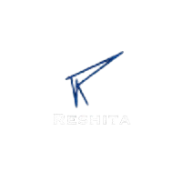
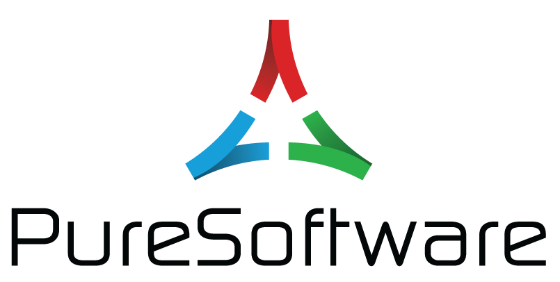

Software Developer
June 2024 – Present
LogicSoft Pvt Ltd
Gurugram, India
- Architected and deployed an Officer Transfer Management module, reducing support tickets by 60% and managing 1,000+ personnel transfers monthly across 200+ laboratories and depots.
- Formulated a high-throughput grain sample tracking system with PostgreSQL stored procedures and functions, processing 50,000+ samples monthly with precise unique identifier generation.
- Collaborated with DevOps team to implement and fine-tune a monitoring and observability stack (Prometheus, Grafana, ELK), enabling proactive issue detection and accelerating incident response by 50%.
- Optimized application performance by implementing Redis caching (40% faster API response times) and batch processing (30% lower server load), achieving a 95% improvement in issue resolution using the ELK Stack.
Java
Spring Boot
PostgreSQL
Redis
Prometheus
Grafana
ELK Stack
Microservices
DevOps

Associate Software Developer
Dec 2023 – May 2024
Reshita
Remote
- Led migration of a MedTech clinic management platform to microservices architecture, improving scalability by 40% and maintainability by 30% using Java Spring Boot and MySQL.
- Engineered OTP verification via SMTP and JWT token-based authentication via Spring Security, reducing login time by 50% and ensuring a 99.9% success rate in secure user access.
- Implemented features for clinic data management, appointment scheduling, and PayPal integration, reducing administrative overhead by 35% and increasing transaction processing efficiency by 20%.
- Developed an agile Internal Management System with token and role-based authentication, integrated Jaeger for logging and monitoring (20% decrease in downtime), and orchestrated Apache Kafka for real-time data streaming (50% faster computation, 25% improved data accuracy).
Java
Spring Boot
MySQL
Microservices
Spring Security
SMTP
JWT
PayPal API
Jaeger
Apache Kafka

Engineer Trainee
Feb 2023 – Nov 2023
PureSoftware
Noida, India
- Styled and implemented responsive interfaces using React and Material UI, achieving a 25% increase in user interaction.
- Constructed scalable microservices using Spring Boot, boosting system scalability by 40% to handle increased user traffic.
React
Material UI
Spring Boot
Microservices